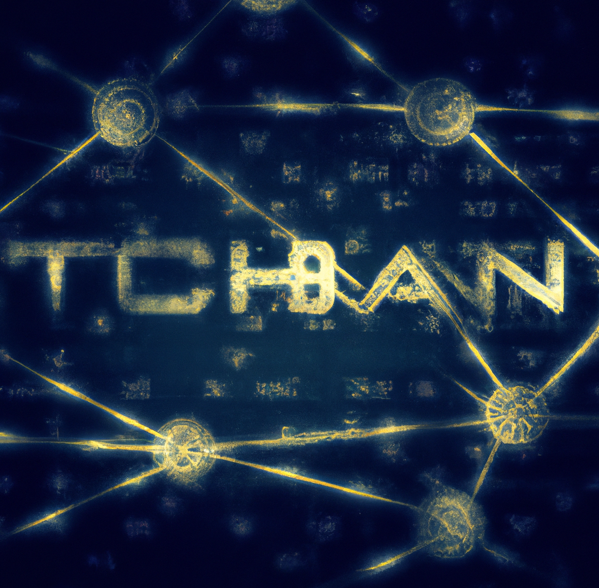

I developed my obsession with cryptocurrencies around three years ago. As soon as I stumbled upon the world of cryptocurrencies, I was draw in by the decentralized nature of them. I imagined a world where power was distributed evenly among the people, rather than being concentrated in the hands of a few powerful institutions.
As I delved deeper into the topic, I spent hours upon hours learning everything I could about them. I read articles and forum posts, watched videos and podcasts, and even joined online communities of like-minded individuals.
Eventually, I became so obsessed that it consumed my every waking thought I spent all my free time thinking about the different coins and projects out there, and I even started trading a little bit on my own. I was convinced that this was the future of money, and I was determined to be a part of it.
It was this obsession that led me to convince my family to invest in the blockchain project. I sweet talked them about how this is going to be the future. The ultra sound money. I was sure it was a solid investment, and I was excited to share my enthusiasm with my family. They trusted me, and they agreed to invest a significant portion of their retirement fund into the project.
At first, things seemed to be going well. The value of the coin we had invested in was going up, and we were all making a profit. I was hailed as a financial genius by my family, and I couldn't have been more proud.
But then... The LUNA collapse happened, and It turned out that the project we had invested in was just a scam. The APY they were promising were just to attract naive idiots like me. All of my parents' money was gone, and we were left with nothing. It was... so hard... to get out of the room and to tell them what happened...
When I finally told them, they were furious with me. They accused me of being irresponsible and naive, and they blamed me for leading them down this path.
I could understand why they were so angry. After all, I had convinced them to invest a significant portion of their retirement fund in this project, and now all of that money was gone. They had trusted me, and I had let them down.
They yelled and screamed at me, telling me that I had ruined their financial future. They said that I had been reckless and irresponsible, and that I had jeopardized their entire way of life. I tried to apologize and explain that I had truly believed in the project, but they weren't interested in hearing it.
In the end, they threw me out of the house and told me that I was no longer welcome there.